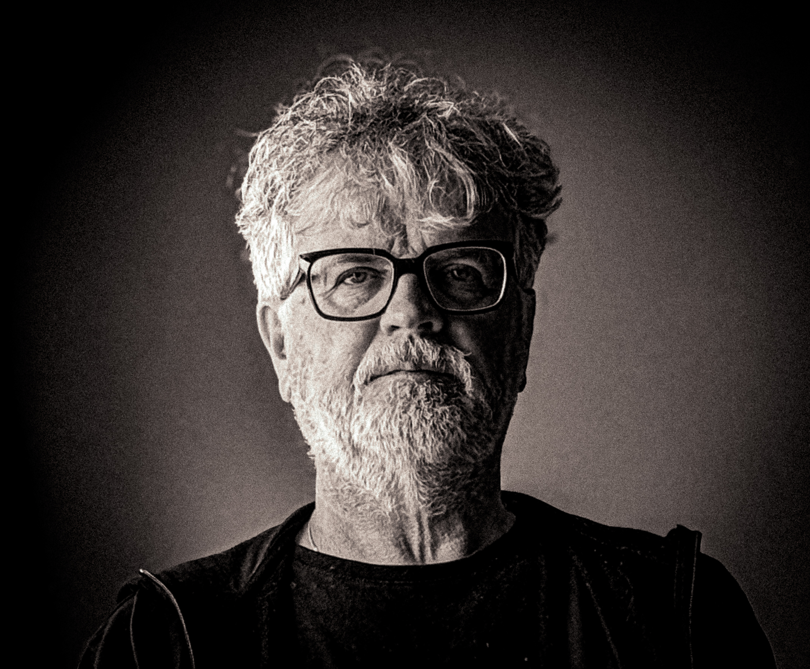

Welkom bij mijn fotoportfolio
Een verzameling van mijn beste werk
Portfolio Categorieën


Over mij
Welkom! Ik ben John Mooij, een gepassioneerd fotograaf met oog voor detail en compositie. Fotografie is voor mij meer dan alleen een beeld vastleggen; het is het vangen van een sfeer, een emotie, of de schoonheid in het alledaagse of juist het spectaculaire.
Mijn werk omvat diverse genres, van de serene rust in de natuur tot de dynamische lijnen van architectuur en de unieke expressie in portretten. Blader door mijn portfolio en ontdek de wereld door mijn lens.

Contact
Heeft u een vraag, wilt u samenwerken, of bent u geïnteresseerd in een van mijn foto's? Neem gerust contact op via onderstaand formulier.